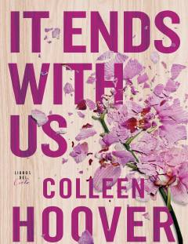

IESevgi, qiyin tanlovlar va murakkab taqdir sinovlari haqidagi ta'sirli roman.
Kitob bosh qahramoni Lili va neyroxirurg Ryle o'rtasidagi murakkab sevgi munosabatlari hamda uning birinchi muhabbati Atlasning qayta hayotiga kirib kelishi haqida hikoya qiladi. Asar oiladagi zo'ravonlik, qiyin tanlovlar va chuqur hissiy kechinmalarni o'quvchiga ta'sirli tarzda ochib beradi. Sevgi va azob-uqubat o'zaro chirmashib ketgan taqdir sinovlari bayon qilingan.